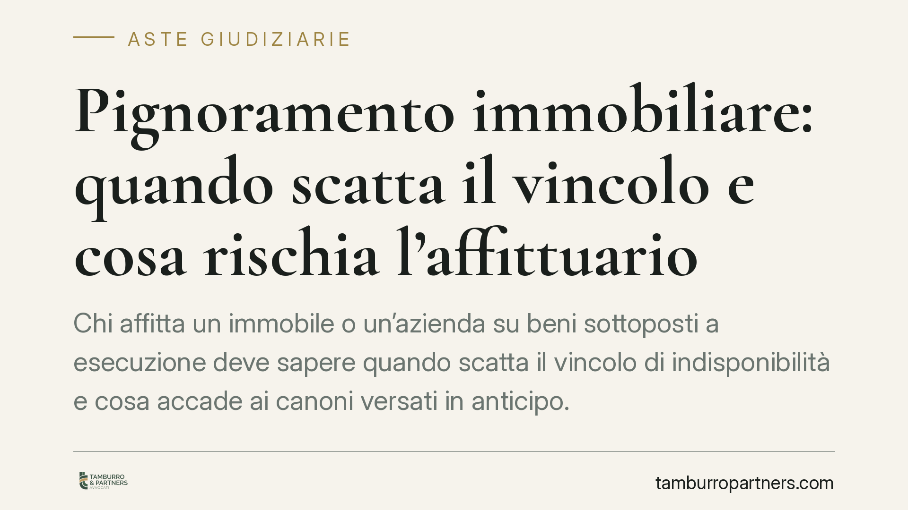

Pignoramento immobiliare: quando scatta il vincolo e cosa rischia l'affittuario
Chi affitta un immobile o un'azienda su beni sottoposti a esecuzione deve sapere quando scatta il vincolo di indisponibilità e cosa accade ai canoni versati in anticipo. Una recente ordinanza della Corte di Cassazione torna sul tema, con effetti concreti sul rischio, per l'affittuario, di pagare due volte lo stesso periodo.

Il caso
Una società semplice, proprietaria di un fondo condotto in affitto da un'azienda agricola, subisce il pignoramento immobiliare del bene. L'affittuaria aveva corrisposto canoni in anticipo per un periodo superiore all'anno. Alla nomina del custode giudiziario si pone il problema: quei pagamenti anticipati sono opponibili alla procedura esecutiva e ai creditori, oppure l'affittuaria è tenuta a versarli nuovamente al custode?
La questione tocca due nodi distinti: il momento in cui l'immobile diventa indisponibile e la sorte dei canoni pagati prima del pignoramento.
Inquadramento normativo
Il pignoramento immobiliare si perfeziona secondo l'art. 555 c.p.c., che ne prevede l'esecuzione mediante notificazione al debitore e successiva trascrizione dell'atto nei registri immobiliari. Occorre distinguere due piani. Nei rapporti tra debitore e creditore procedente, l'effetto di indisponibilità è collegato alla notifica dell'atto: da quel momento il debitore non può disporre validamente del bene a danno dell'esecuzione. L'opponibilità ai terzi, invece, richiede la trascrizione, che rende il vincolo conoscibile e prevalente rispetto agli atti trascritti successivamente.
Sul destino dei pagamenti anticipati interviene l'art. 2918 c.c., che regola l'inopponibilità al creditore pignorante delle locazioni non trascritte, di quelle con durata eccedente e delle cessioni o liberazioni di pigioni e fitti non ancora scaduti riferite a più di un'annualità, salvo trascrizione. La ratio è impedire che il debitore sottragga anticipatamente alla garanzia i frutti civili del bene.
Si collega qui l'art. 2917 c.c., secondo cui il pagamento dei crediti derivanti dalla locazione (i canoni) non ha effetto verso il creditore pignorante se anteriore al pignoramento e relativo a periodi successivi. È questa la norma più specifica sul destino dei canoni. L'art. 1189 c.c. sul pagamento al creditore apparente può rilevare solo in via residuale, per valutare la buona fede di chi paga a soggetto non più legittimato: presupposto difficilmente configurabile una volta noto il pignoramento.
Un profilo interpretativo: affitto d'azienda agricola
Il caso presenta una peculiarità. L'affitto di azienda agricola non coincide con la locazione immobiliare in senso stretto, perché ha per oggetto un complesso produttivo e non il solo bene. L'applicazione dell'art. 2918 c.c., dettato per locazioni e pigioni immobiliari, a un rapporto di affitto d'azienda richiede quindi un passaggio interpretativo: la disciplina sull'inopponibilità dei pagamenti anticipati viene estesa in ragione della funzione di garanzia, per evitare che la componente immobiliare dell'azienda sia svuotata di frutti a scapito dei creditori. È un profilo su cui la lettura della motivazione integrale è dirimente.
Implicazioni pratiche
Per l'affittuario il rischio è concreto: aver pagato in anticipo non lo libera nei confronti della procedura. Se i canoni riferiti a periodi successivi al pignoramento non sono opponibili, il custode giudiziario può pretenderne il versamento, esponendo l'affittuario a un doppio esborso. Il recupero di quanto già pagato al proprietario resta possibile solo in via di regresso, con i tempi e le incertezze del caso.
Per chi acquista in asta o valuta l'investimento, il dato conferma che i rapporti pendenti sul bene vanno esaminati non solo nella loro esistenza formale, ma nella loro reale opponibilità alla procedura.
Cosa fare in concreto
- Verifica la data del pignoramento rispetto ai pagamenti effettuati: individua quali periodi sono anteriori e quali successivi alla notifica e alla trascrizione.
- Non versare canoni anticipati oltre l'annualità senza trascrizione del titolo: oltre quel limite il pagamento rischia di essere inopponibile.
- Individua il soggetto legittimato a ricevere: dopo la nomina del custode giudiziario i canoni vanno corrisposti a quest'ultimo, non più al proprietario.
- Conserva la documentazione dei versamenti, indispensabile per un'eventuale azione di regresso verso il locatore.
- È opportuna una verifica legale mirata prima di stipulare o rinnovare contratti su immobili potenzialmente esposti a esecuzione.
Resta ferma la necessità di confrontare ogni valutazione con il testo integrale del provvedimento e con la specifica documentazione del rapporto.
Disclaimer
Contributo informativo a cura di Tamburro & Partners - Avv. Giuseppe Tamburro. Non costituisce parere legale.
Comprare bene all’asta si può.
Se vuoi acquistare un immobile all’asta in sicurezza o difendere un esecutato, scrivi allo studio. Ti rispondiamo entro un giorno lavorativo.